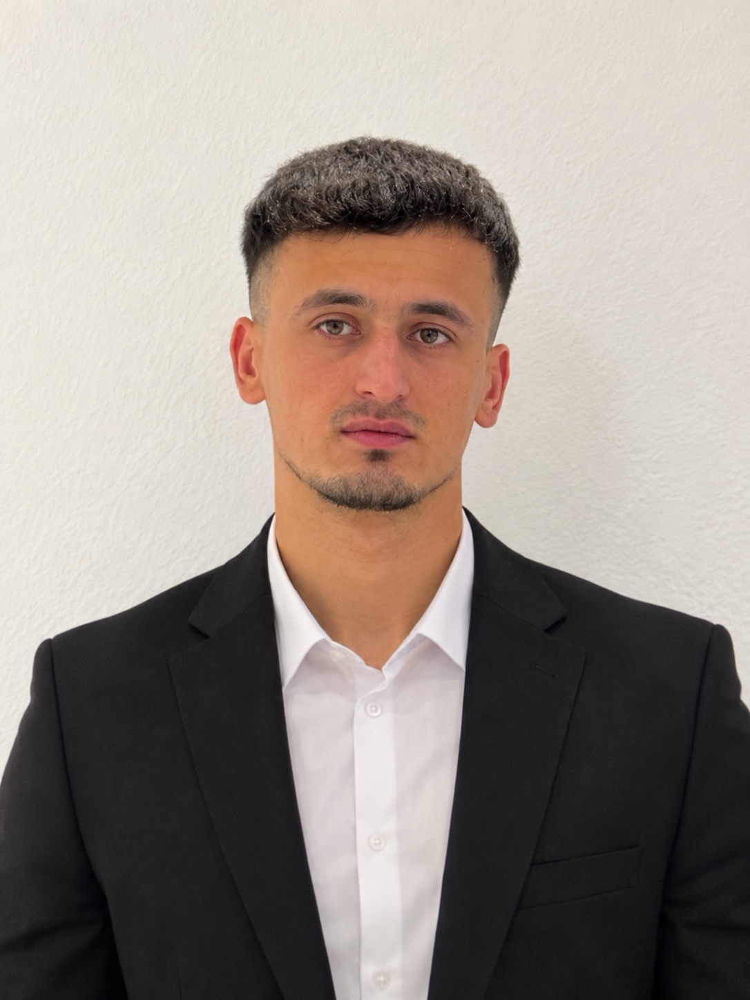

Ich absolviere seit Februar 2026 eine Umschulung zum Fachinformatiker für Systemintegration mit Praxiseinsatz bei der Damago GmbH. Dabei baue ich meine Grundlagen in Netzwerktechnik, Linux, Scripting und IT-Sicherheit Schritt für Schritt aus. Zuverlässigkeit, Teamfähigkeit und Motivation sind mir wichtig.